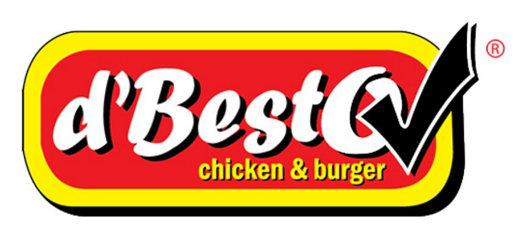
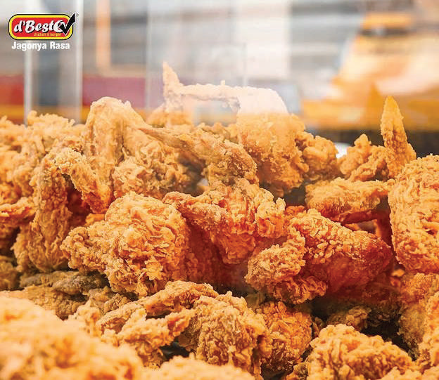
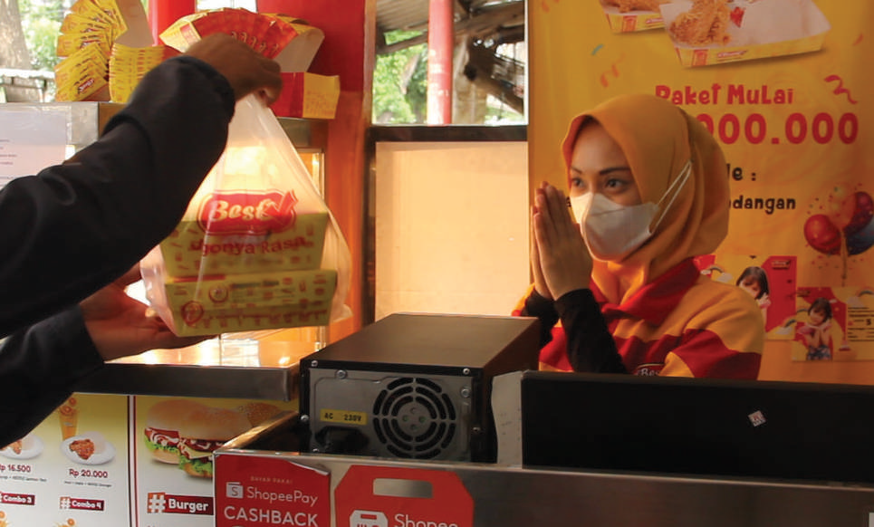

Khasnya bikin kenal.
Ayam goreng dan ragam olahan yang menjadi bagian dari perjalanan d’Besto.

Jagonya RasaYuk, ngobrol ↗FRIED CHICKEN & BURGER • d’BESTO
Ayam goreng dengan rasa khas, burger, dan pilihan menu untuk menemani waktu makan keluarga dan serunya kumpul bareng.

GOOD FOOD. GOOD MOOD.BUKAN CUMA SOAL MAKAN
Ayam goreng dan ragam olahan yang menjadi bagian dari perjalanan d’Besto.
Pilihan ayam, burger, dan menu pendamping untuk dinikmati sesuai selera masing-masing.
Hadir untuk waktu makan keluarga, istirahat kerja, dan kumpul bersama teman.

DARI KAMI, UNTUKKENALAN DENGAN d’BESTO
d’Besto adalah merek fried chicken dan burger di bawah PT Evalinda Berkah Mandiri (EBM). Perjalanan usahanya berawal dari KUFC pada 1994, lalu hadir dengan nama dan konsep d’Besto pada 2010.
Kami membawa semangat menghadirkan makanan berkualitas dengan harga terjangkau, sekaligus memberi manfaat bagi konsumen, karyawan, dan mitra.
ADA RENCANA MAKAN BARENG?
Pesanan acara sekolah, kantor, atau komunitas.
Ceritakan kebutuhanmu kepada tim kami.
Sampaikan lokasi, tanggal, jumlah peserta, dan perkiraan anggaran.
Tim membantu mengecek menu, harga, serta kemampuan layanan outlet terkait.
Pastikan jumlah, jadwal, pengambilan atau pengantaran, dan pembayaran disepakati.
Layanan dan pengantaran mengikuti ketersediaan serta kesepakatan dengan tim.
PELUANG KEMITRAAN
Kenali peluang kerja sama dengan PT Evalinda Berkah Mandiri. Diskusikan lokasi, model pengelolaan, dan kesiapan usaha langsung dengan tim.
Bicara tentang kemitraan ↗Ketentuan, kebutuhan investasi, dan risiko dibahas dalam proses konsultasi. Tidak ada jaminan hasil investasi.
BIAR MAKIN JELAS
Dokumentasi perusahaan mencakup fried chicken, ayam geprek, SADAS, burger, spaghetti, kentang, serta minuman. Pilihan yang tersedia dapat berbeda antaroutlet. Hubungi tim untuk menu dan harga terkini.
Cari d’Besto di peta, lalu periksa alamat dan jam buka outlet sebelum berkunjung.
Cari d’Besto di Google Maps ↗Bisa dikonsultasikan dengan tim. Siapkan tanggal acara, lokasi, jumlah peserta, dan kebutuhan menu. Harga, kapasitas, serta cara pengiriman harus dikonfirmasi terlebih dahulu.
Pilih topik Kemitraan pada formulir di bawah. Sampaikan nama, kota atau lokasi yang direncanakan, serta pertanyaan Anda. Tim akan menjelaskan proses dan persyaratan yang berlaku.
MULAI DARI SATU OBROLAN
Mau makan bareng, menyiapkan jamuan acara, atau menjajaki peluang usaha? Ceritakan rencanamu. Tim d’Besto akan membantu mengecek pilihan menu dan layanan yang sesuai—mulai dari satu chat WhatsApp.
Jl. Raya Srengseng Sawah No. 21, Jagakarsa
Jakarta Selatan 12640